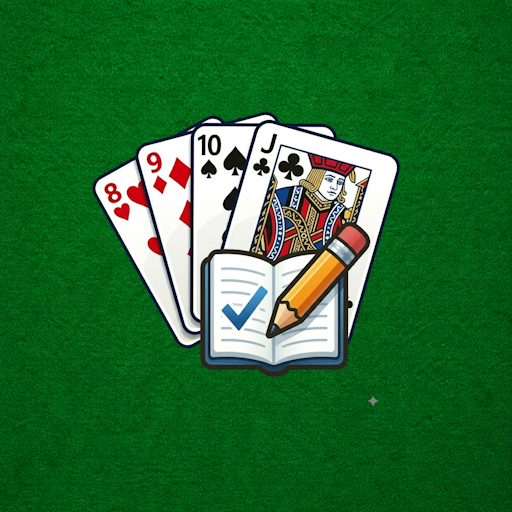

SegnaBurraco
Segnapunti per Burraco con classifica, statistiche e gestione giocatori
Schermate

{kind=link}
{kind=link}
{kind=link}
Descrizione
SegnaBurraco è l'app definitiva per tenere traccia delle tue partite a Burraco, il popolare gioco di carte italiano. Semplice da usare, elegante nel design e ricca di funzionalità, SegnaBurraco rende ogni partita più organizzata e divertente.
🃏 GESTIONE PARTITE
Crea partite in tre diverse modalità: - 2 giocatori: sfida diretta uno contro uno - 3 giocatori: competizione triangolare - 4 giocatori: modalità in coppia, due contro due
Per ogni partita puoi aggiungere le mani una alla volta, inserendo i punti base e i punti carte per ogni squadra. Il punteggio totale viene calcolato automaticamente e la partita si chiude da sola quando una squadra raggiunge i 2005 punti. Puoi modificare o correggere qualsiasi mano con un semplice tocco.
👥 ANAGRAFICA GIOCATORI
Registra i tuoi amici e familiari nell'archivio giocatori. Per ogni giocatore puoi inserire il nome completo e un soprannome. Quando crei una nuova partita, selezioni i giocatori direttamente dall'elenco — niente più errori di battitura o nomi dimenticati. Un giocatore associato a una o più partite non può essere eliminato accidentalmente, così i tuoi dati storici sono sempre al sicuro.
🏆 CLASSIFICA
SegnaBurraco tiene traccia automaticamente delle performance di ogni giocatore nel tempo. La classifica assegna: - 2 punti per ogni vittoria in modalità singola (2 o 3 giocatori) - 1 punto per ogni vittoria in coppia (4 giocatori) Un podio visivo mette in evidenza i primi tre classificati, mentre la tabella completa mostra punti totali, vittorie e partite giocate per ogni giocatore. La classifica si aggiorna in tempo reale dopo ogni partita conclusa.
🎨 PERSONALIZZAZIONE
Scegli il tema dell'app tra cinque colori: Viola, Blu, Verde, Arancione e Rosso. Seleziona la modalità display che preferisci: chiara, scura, o automatica (segue le impostazioni del tuo dispositivo). Le tue preferenze vengono salvate e ripristinate ad ogni avvio.
📱 DESIGN MODERNO
SegnaBurraco è costruita seguendo le linee guida Material Design 3 di Google, con un'interfaccia pulita, intuitiva e piacevole da usare. La navigazione tra le sezioni è immediata grazie al menu in basso, sempre visibile e accessibile.
💾 DATI AL SICURO
Tutte le partite, i giocatori e le statistiche vengono salvati localmente sul tuo dispositivo tramite un database SQLite integrato. I tuoi dati sono sempre disponibili, anche senza connessione a internet, e non vengono mai condivisi con server esterni.
SegnaBurraco è l'app che mancava a ogni appassionato di Burraco.
Scaricala ora e porta il tuo gioco al livello successivo!